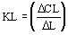
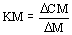
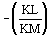

Lead/Lag function block application information
The Lead/Lag function block is useful for a variety of process control applications. Two typical applications are the filtering of a measured or calculated value and feedforward dynamic compensation.
Application example: filtering a measured or calculated value
You use the Lead/Lag function block as a first-order filter by setting the lead time constant (LEAD_TIME) to zero. In this case, the amount of filtering applied is determined by the lag time constant (LAG_TIME).
Application example: feedforward dynamic compensation
In some processes, the time required for the measurable disturbance and the manipulated process input to impact a controller parameter might be the same, but the associated response time (lag) might be different. The following figure shows an example of a mixing process that experiences this difference in lag times:
The following diagram shows the difference in lag time between the manipulated input and the measured load disturbance for this process:
In this example, the Lead/Lag function block can be used to compensate the feedforward control action for the controlled parameter's differences in gain and dynamic response to changes in the load disturbance and the manipulated input. To do this, you include a Lead/Lag function block in the feedforward path. You set the LEAD_TIME parameter to Tm and the LAG_TIME parameter to Td.
If

where:
KL = process gain for load disturbance input
Δ CL = steady state change in the controlled parameter for a step change in the load disturbance input (% of range)
Δ L = step change in the load disturbance input (% of range)
and

where:
KM = process gain for manipulated input
Δ CM = steady state change in the controlled parameter for a step change in the manipulated input (% of range)
Δ M = step change in the manipulated input (% of range),
you set the GAIN parameter to:

When the process response also includes significant delay, you can use a Deadtime function block to compensate for the delay. The following figure is an example of the function block diagram for this application: